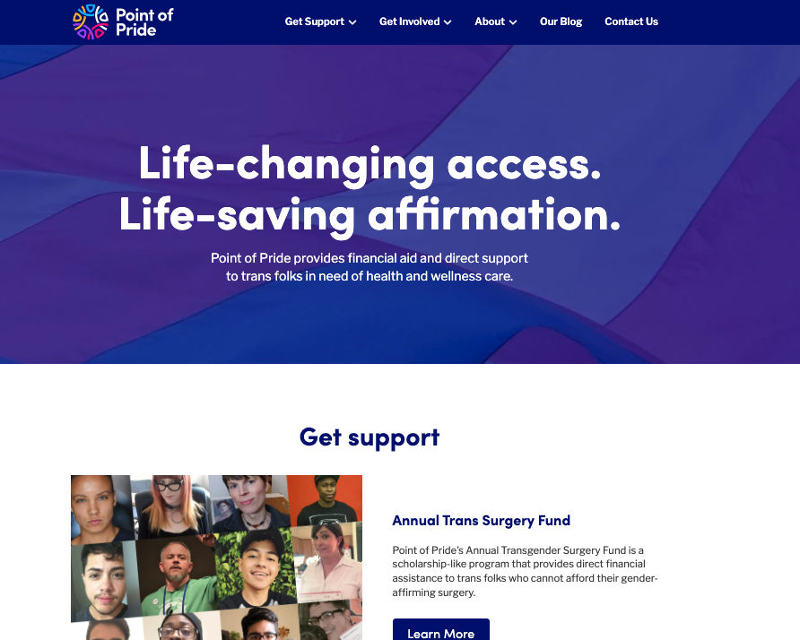

The organization already had a solid, consistent color scheme and brand; however, I was interested in finding ways to not only make the website more distinct but also more inviting and approachable.Because Point of Pride is involved in providing support for various medical procedures, I wanted to ensure my logo designs presented them as dependable and respectable. However, I also wanted to highlight their empathic and uplifting mission goals as an organization, especially towards trans youth.
After some sketching, I liked the metaphor of a butterfly (signifying transformation) and a hand (signifying warmth and care), and focused my designs around those visuals.
After getting some feedback from peers, I leaned towards the logo of the outstretched finger, not only because of its simple geometric design but also how the finger seemed to be pointing, as a reference to "Point" of Pride.
Now that I had a better understanding of where I wanted to go, it was time to refine the logo.
I wanted to have a bright and colorful palette with a subtle reference to the trans flag, alongside some simple yet fun and distinct typography.
To see how this design could be implemented in various real-life products, I designed a few ways in which this design could manifest.
Illustrations & Social Media Mockups
Packaging
Subway Ad Mockups
Going in to the redesign, I knew I wanted to create a distinct color palette and design scheme that helped provide Point of Pride a strong visual brand. But I wanted to balance the feeling of the uplifting and joyful nature of trans pride and gender euphoria while also maintaining a sense of respect and professionality in respect to the many medical and financial procedures Point of Pride is involved in.
Overall, I realised the importance of not only creating an aesthetic brand, but also intentionally considering the intended message and the audience interpretation.